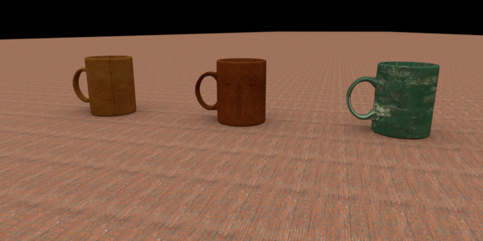
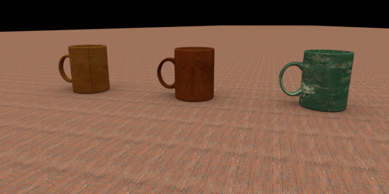

Images as Textures
Jiayi Sun
Updated Files
- include/lodepng.h
- src/lodepng.cpp
- src/imagetexture.cpp
Implementation
The ImageTexture class implements texture mapping using image files, supporting both nearest-neighbor and bilinear interpolation modes. We load the texture as a .png file using the lodepng library and stored as an array of pixel values. We support two wrap modes, repeat and clamp, to handle out-of-bound UV coordinates. We also apply inverse gamma correction to pixel values to ensure proper color.
The formula for gamma correction is:
\[ I_{\text{out}} = \begin{cases} \frac{I_{\text{in}}}{12.92} & \text{if } I_{\text{in}} \leq 0.04045 \\ \left( \frac{I_{\text{in}} + 0.055}{1.055} \right)^{2.4} & \text{if } I_{\text{in}} > 0.04045 \end{cases} \]This formula corrects the non-linear gamma encoding typically used in image formats to achieve linear color space for rendering calculations.
Validation
We compare our result with Mitsuba3, which uses the same image texture for each mug and ground, respectively. We also show the non-textured version for comparison. We then try to scale the texture to see if the texture mapping is correct.
Here we use repeat mode for better visualization.
We also test with different scales of the texture.
 
